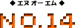
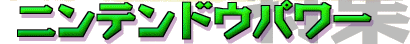
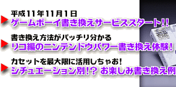
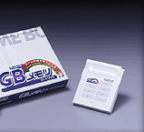

|  | |
 |
|
1999年11月1日からサービス開始を予定しておりましたゲームボーイソフトの書き換えは、同年9月21日の台湾大震災の影響によるＧＢメモリカートリッジの生産が遅れから、2000年3月1日にサービス開始時期を延期することになりました。 Nintendo Online Magazine 99年10月号の本文中に記載しておりますサービス開始日は、「マリオランド３プリライト版」を除き、すべて延期発表前の情報です。 |
|  |
|
ＮＯＭの今月のネタは、ゲーム書き換えサービス“ニンテンドウパワー”です。ニンテンドウパワーについては、ＮＯＭ創刊第２号でいちど特集を組んでいるんだけど、ココでふたたび取り上げちゃいま〜す。 というのも、平成11年11月１日というイチ並びの縁起のいい日に、ゲームボーイ用タイトルの書き換えもはじまっちゃうからなんだなっ！！ もちろん、いままで同様、スーパーファミコン用ゲームの書き換えだって絶好調。 ますますパワーアップしているニンテンドウパワーを、新発見＋再確認していきましょ！ |
|
▼平成11年11月１日、ゲームボーイ書き換えサービススタート！！ ▼書き換え方法がバッチリ分かる、リコ編のニンテンドウパワー書き換え体験！ ▼カセットを最大限に活用しちゃお！シチュエーション別！？ お楽しみ書き換え例 |